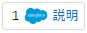

このハンズオンでは、MuleSoft Composer for Salesforceを利用し、下記のユースケースの実装を行います。
ユースケース
Salesforce上の商談で、「フェーズ」項目が受注（Closed Won）となったものについて、商談レコード内の「説明」項目にタイムスタンプを追記する。
目次
- MuleSoft Composerの起動
- フローの作成
- トリガー
- 接続
- トリガー内容の設定
- ステップ
- テスト
- 有効化（Activation）
- フロー一覧画面
- フロー実行履歴表示
- フローの無効化（Deactivation）
- 参考リソース
１．Salesforceにログインします。
２．MuleSoft Composer for Salesforceを起動します。
左上のメニューでMuleSoft Composerを検索し、起動します。
１．フローを作成する（フロー作成する2つの方法）
方法① 右上の「Create New Flow」を押す。
方法② 「Composer Flow」タブを選択後、右上の「New Flow」を押す。
２．フローに名前を付ける
左上、Untitled Flowの右側にあるペンマークをクリックし、フロー名を付けます。
＊日本語は利用できません。

１．スケジューラーステップを確認する
フロー作成の最初は、フローの起動条件であるトリガーの指定となります。
スケジューラーによる定期実行または、各コネクターの持つトリガーによる起動を行うことができます。（トリガーを持たないコネクターもあります。）
ここでは、まず、スケジュール実行を確認します。少し下にスクロールして「Scheduler」を選択してください。
Schedulerステップが配置され、ドロップダウンリストを展開すると、期間の選択が出来ます。
２．ステップを削除する
一旦、Schedulerステップを削除します。
ステップ右上のメニューを開き、「Delete Step」を選択します。
３．Salesforceトリガーを選択する
「Salesforce」を選択します。次のセクションで接続を設定していきます。
１．Salesforce接続を作成する
まず、接続に対し名前を付けます。
Composerでは、複数のSalesforce組織との接続が可能であり、異なる接続名を付けることで接続先を判断できるようにします。
接続したいSalesforce組織にログインします。
MuleSoft Composerによるアクセスを許可します。
２．接続の変更方法を確認する
接続先は、トリガーステップの右上メニューから変更することが出来ます。また、新規に接続を作成する事が出来ます。
一旦キャンセルして、次に進んでください。
１．Salesforceトリガーを設定する
Salesforceトリガ―の場合は、下記の３つの条件を利用することが出来ます。
- New record（レコードの新規作成時）
- New or updated record（レコードの新規作成またはレコードの更新時）
- Deleted record（レコードの削除時）
ここでは、「New or updated record」を選択します。
次に、対象となるオブジェクトを指定します。
Object Typeに「商談」と入力すると候補が出てきますので、リストから選択してください。
次に、このフローで利用する項目を選択していきます。「Select Fields」を選択してください。
検索しながら、利用したい項目に✔を入れ、最後に「Add」を押します。
ここでは、商談ID、商談名、フェーズ、説明を選択します。
次のように、選択した項目数と、右側には選択した項目およびその項目のサンプルデータが表示されます。
フローの処理を実装していきます。
トリガーの下にある「＋」マークをクリックしてください。
スクロールすると、各コネクターに加え、「IF/Else Block」と「For Each」という処理が選択できることが分かります。
ここでは、商談の「フェーズ」項目が「受注」となったレコードに対する処理とするため、「IF/Else Block」を選択します。
IF/Elseでは、複数のAND/OR条件を指定しフローを実行したり、IF - then - elseといった形で複数の条件による処理の分岐を行うことが出来ます。
Fieldとして「フェーズ」を選択します。
この時、どのステップもしくはトリガーで取得されたデータを利用するかが分かるようになっており、ここでは、１番のTriggerで取得された「フェーズ」ということになります。もし、トリガー設定で利用する項目を選択しなかった場合は、大量の項目が表示されることになります。
Valueは、今回のように固定文字列の場合はそのまま入力しますが、
比較対象としては他ステップで取得した値を利用したり、Custom Expression Editorを用いて動的に作成する値を用いることも出来ます。
＊この Custom Expression Editorは、項目に対して値を設定する際にも利用できます。
「Closed Won」と入力し、「＋」を押してステップを追加します。
Salesforceを再度選択します。
今回は、変更されたレコードに対し変更をかけてみたいと思いますので、先程作成（使用）したのと同じ組織を選択します。
Salesforceステップの場合は、下記の処理を利用することが出来ます。
- Create new record （レコードの新規作成）
- Update record（レコードの更新）
- Get record（レコードの値の取得）
- Create or update record（レコードの作成または更新。Upsert処理です。）
- Delete record（レコードの削除）
ここでは、「Update record」を選択します。
トリガーを設定したときと同様に「商談」を指定し、少し待ちます。
トリガーで取得されているレコードの情報を更新しますので、トリガーで取得された商談IDを指定します。
次に、「Add Fields」をクリックし、更新したい項目を選択します。ここでは「説明」項目を選択します。
説明項目に、既存で入っている文字列に追加したものを設定してみますので、「Custom Expression」を選択します。
「Data」タブで、「説明」項目を選択すると、右側作業ペインにが追加されます。また、「Functions」タブにある関数を利用した本日日付と文字列を追加します。
右上「Save」を押して、フローを保存してください。
１．テスト実行します。
右上「テスト」を押してください。

次のような表示になったらトリガー待機状態です。
Salesforce側で一つ商談を選択し、フェーズを「受注」に変更してください。
暫く待つと、テストが実行され、その後、Salesforce側のレコードを更新すると変更された値が表示されます。
１．フローの有効化
テストが完了したら、右上の「Activate」を押してフローを実行状態にします。
１．フロー一覧画面の表示
「Composer Flows」をクリックすると、フローの一覧画面が表示されます。
１．フロー実行履歴の表示
フローの名前をクリックすると、実行履歴が表示されます。
また、この画面で、「View」をクリックすることで編集画面に移動することが出来ます。
一覧から作成したフローを選択し、次の画面でViewを押すことで、フローを表示します。
右上にDeactivateボタンが表示されますので、こちらを押して停止します。
＊今回のハンズオンで作成した一連の流れは、案件が更新されステータスがClosed Wonであるものに対して処理を行います。つまり、このフローが有効化されたままでは処理が繰り返されることになりますのでご注意ください。
製品ドキュメント
学習リソース／デモ動画 まとめサイト
TrailHead
- Get Started with MuleSoft Composer | Salesforce Trailhead
- 複数Org同期
- Workday
- Twilio
- Tableau
- Stripe
- Slack
- NetSuite、別ユースケースアカウント、在庫、在庫・生産
- Jira
- Asana
- ServiceNow
- MS Teams
- Google Sheet